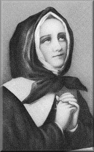
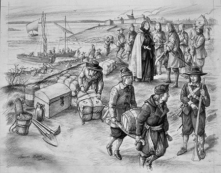
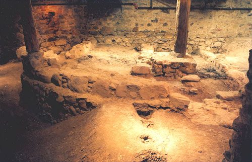
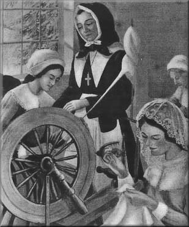
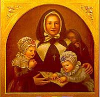
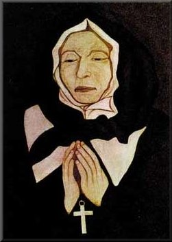

|
+

Comment
sommes-nous affiliés à Marguerite Bourgeois ?
Découvrez sa vie et son oeuvre à partir d'extraits du
dictionnaire biographique du Canada
Marguerite et la tire Ste-Catherine
Marguerite et les Filles du Roi
L'éducation des filles, une priorité
Photos de presse du début du 20ème siècle
À la rencontre de Marguerite, deux musées
BOURGEOYS, MARGUERITE,
dite du Saint-Sacrement, fondatrice de la congrégation
de Notre-Dame de Montréal, née à Troyes, en Champagne (France),
le 17 avril 1620, décédée et inhumée à Montréal,
le 12 janvier 1700, béatifiée le 12 novembre 1950
et canonisée le 31 octobre 1982.
 Marguerite Bourgeoys naît en France au siècle de la guerre de
Trente Ans et de la Fronde, au temps des puissantes et méthodiques
réalisations de Richelieu et de Colbert, au temps des grands
mystiques de l'école française, Jean-Jacques Olier, Pierre de Bérulle,
Charles de Condren. Marquée par son milieu et son temps,
Marguerite Bourgeoys sera à la fois grande réaliste et profonde
mystique. Elle y prendra aussi figure d'avant-garde.
Par son
père, Abraham Bourgeoys, maître chandelier et monnayeur en la
Monnaie de Troyes, ainsi que par sa mère, Guillemette Garnier,
Marguerite appartient à la bourgeoisie française du XVIIè siècle. L'inventaire détaillé des propriétés et des bijoux de
Mme Bourgeoys et une étude de la famille Garnier prouvent la
qualité des relations sociales qu'entretenaient ses parents et
l'aisance dans laquelle ils vivaient.
Jusqu'en
1950, les biographes de Marguerite Bourgeoys répétaient que,
orpheline à 12 ans, elle avait dès lors été chargée de la
tenue de la maison et de l'éducation de ses frères et sœurs.
Des documents récemment découverts prouvent au contraire que
Marguerite, sixième des 12 enfants Bourgeoys, avait 19 ans à la
mort de sa mère, et qu'elle avait une sœur aînée, Anne, encore
à la maison en 1639.
C'est en
1640 – Marguerite est alors âgée de 20 ans – que
se situe le premier jalon de l'étonnante odyssée qui l'amènera
jusqu'en Nouvelle-France.
La congrégation
de Notre-Dame, fondée en 1598 par Alix Leclerc, sous
l'instigation de l'abbé Pierre Fourier, avait un couvent à
Troyes. Ces religieuses cloîtrées, qui ne pouvaient sortir pour
exercer leur apostolat en dehors du monastère, avaient recours à
un moyen terme : une congrégation dite externe, groupe de
jeunes filles qui se réunissaient au monastère pour des
instructions pieuses et des leçons de pédagogie.
« Quelques
sollicitations qu'on lui en fît », Marguerite Bourgeoys
avait toujours refusé d'entrer dans la congrégation externe, par
crainte de « passer pour bigote ». Mais en 1640, lors
de la procession du Rosaire, un brusque coup de barre change sa
destinée. « On repassa, écrit-elle, devant le portail
de
l'abbaye de Notre Dame ou il y a au-desus de la porte une image
de pierre de la Vierge et en jetant la veue pour la regarder je
la trouvay très belle et en mesme temps je me trouvai si touchée
et si changée que je ne me connoissest plus et retournant à la
maison cela paroissoit à tous et comme jetes for legère jetes la
bien venue avec les autres filles. »

Ville-Marie au 17ème siècle
La première
démarche de Marguerite Bourgeoys est d'entrer dans la congrégation
externe. La directrice des congréganistes est alors mère
Louise de Chomedey de Sainte-Marie, sœur de Paul de Chomedey
de Maisonneuve, gouverneur de Ville-Marie. Par elle,
Marguerite entend parler du Canada, puis est présentée à
Maisonneuve, de passage à Troyes en 1652. Sœur Louise de
Chomedey et quelques compagnes supplient Maisonneuve de les amener
à Montréal. Mais il refuse, disant que, dans les conditions
actuelles, une communauté religieuse ne pourrait subsister à
Ville-Marie. Marguerite Bourgeoys, alors âgée de 33 ans, s'offre
à y aller, et Maisonneuve l'accepte.
D'étranges
refus d'admission au Carmel et à d'autres communautés
contemplatives l'avaient laissée disponible pour Ville-Marie. En
février 1653, elle quitte Troyes pour ne débarquer à Québec,
après bien des difficultés, que le 22 septembre. La
traversée avait duré trois mois ; le voilier était misérable et la peste éclata à
bord, si bien que Marguerite devint infirmière.

Arrivée
de Marguerite Bourgeoys à Ville-Marie en 1653 - Francis Back
À son
arrivée à Ville-Marie, Marguerite Bourgeoys ne trouve pas
d'enfants d'âge scolaire, à cause de la mortalité infantile :
« On a été environ 8 ans que Ion ne pouvoit point élevé
danfants ». En attendant, elle se fait la grande sœur des
colons. Déjà, sur le bateau, sa présence leur a valu une prédication,
presque une conversion, car à leur arrivée, « ils étoient
changés comme le linge quon met à la licive ». En 1657,
elle semble les avoir gagnés bien gracieusement à une corvée
pour la construction de la chapelle de Notre-Dame-de-Bon-Secours
(première église de pierre bâtie dans l'île de Montréal) qui,
avec bien des transformations, s'élève encore aujourd'hui au même
endroit. Les témoignages de ses contemporains assurent qu'en
toutes circonstances on recourait à Marguerite, véritable
assistante sociale avant la lettre.

Abside de la chapelle de 1675. Vestige de la palissade de 1709
Mais la
mission à laquelle ses goûts et ses dispositions naturelles la
poussent, c'est l'enseignement. Le 30 avril 1658,
Marguerite Bourgeoys peut enfin accueillir ses premiers écoliers,
dans une étable que, faute de mieux, lui a donnée Maisonneuve.
L'acte de concession dit que c'est « un bâtiment de pierre
de trent-six pieds de long sur dix-huit de large, situé à
Ville-Marie, proche de l'Hôpital Saint-Joseph ».
Marguerite voit cependant plus loin et plus grand car, dès cette
même année 1658, elle retourne en France « dans le desain
d'amener quelque filles pour maider a recorder les enfants ».
Elle en ramène trois bonnes bourgeoises, Edmée Châtel, Marie Raisin,
Anne Hiou, ainsi qu'une jeune « fille forte » pour les
grosses besognes.  Grâce à l'aide de ses compagnes, Marguerite
Bourgeoys pourra bientôt recevoir les filles du
roi, ces jeunes
orphelines que Louis XIV envoie en Nouvelle-France « pour
faire des familles ». Elle va les « quérir au bor de
leau », les prépare à leur rôle futur. C'est chez elle
que les colons de Ville-Marie viennent chercher femme, non sans
subir un sévère examen. Ils semblent d'ailleurs apprécier cette
exceptionnelle agence matrimoniale ainsi que l'enseignement donné
aux enfants à l'école de Marguerite Bourgeoys, car en 1667, dans
une « assemblée d'habitants », ils prennent la résolution
de demander au roi des lettres patentes pour les « filles de
la Congrégation », nom que déjà, à Ville-Marie, on
donnait à « Sœur Bourgeoys » et à ses compagnes.
De son côté,
Mgr de Laval, vicaire apostolique de la Nouvelle-France, lors de
sa visite en 1669, approuve par l'autorité d'une ordonnance les
institutrices de Ville-Marie pour l'île de Montréal et tous les
autres lieux du Canada qui les demanderaient.
Marguerite Bourgeoys décide donc, en 1670, d'aller «
demander
des lettres patentes au roi » pour assurer l'existence de sa
communauté. Ce voyage est peut-être le plus étonnant de tous.
Marguerite part, seule de son sexe, avec dix sols dans sa poche.
Arrivée à Paris, « sans argant sans hardes et sans
connaissances », elle atteint Louis XIV. Talon
avait signalé à Colbert, dans son rapport du 10 novembre 1670,
les services rendus au pays par cette « espèce de Congrégation
pour enseigner à la jeunesse, avec les lettres et l'écriture,
les petits ouvrages de mains ». Et Colbert avait écrit en
marge : « Il faut s'employer à cet établissement ».
Le terrain est donc bien préparé, et Marguerite Bourgeoys
obtient du roi, en mai 1671, les lettres patentes demandées.
« Non seulement, écrit le roi, elle a fait l'exercice de maîtresse
d'école en montrant gratuitement aux jeunes filles tous les métiers
qui les rendent capables de gagner leur vie, mais, loin d'être à
charge du pays, elle a fait construire des corps de logis, défriché
des concessions, aménagé une métairie ».
 Marguerite Bourgeoys
ramène de France trois de ses nièces :
Marguerite, Catherine et Louise Sommillard. Marguerite et
Catherine deviendront plus tard sœurs de la Congrégation, et Louise, la femme d'un colon nommé
Fortin (c'est ainsi que nous sommes parents avec Marguerite
Bourgeois). Marguerite Bourgeoys
ramène de France trois de ses nièces :
Marguerite, Catherine et Louise Sommillard. Marguerite et
Catherine deviendront plus tard sœurs de la Congrégation, et Louise, la femme d'un colon nommé
Fortin (c'est ainsi que nous sommes parents avec Marguerite
Bourgeois).
À cette
époque (1672), Marguerite Bourgeoys commence à vivre l'âge d'or
de son œuvre en Nouvelle-France, une décennie de grande
expansion. À la
demande des familles nobles et bourgeoises qui, jusqu'alors,
envoyaient leurs filles à Québec, Marguerite Bourgeoys ouvre un
pensionnat à Ville-Marie, en 1676.
Mais les
préférences de Marguerite Bourgeoys vont aux fillettes moins
fortunées. Pour elles, elle crée la première école ménagère
au pays, l'ouvroir de la Providence, à la pointe Saint-Charles.
De plus, à toutes celles qui ne peuvent venir au pensionnat, elle
envoie ses sœurs. Ainsi se fondent de petites écoles à Lachine,
à la Pointe-aux-Trembles de Montréal, à Batiscan, à Champlain.
Les petites sauvagesses ont toujours large part dans ses prédilections.
Depuis son arrivée à Ville-Marie, Marguerite Bourgeoys en a
attiré et recueilli quelques-unes à son école. Vers 1678, elle
établit une mission au village sauvage de la Montagne. Les sœurs
enseignent dans des cabanes d'écorce. Ce n'est qu'à la fin du siècle
qu'elles habiteront dans les tours du fort construit par M. Vachon
de Belmont, tours qu'on voit encore aujourd'hui sur le terrain du
grand séminaire de Montréal.
Devant
les proportions, imprévisibles au départ, que prend son œuvre,
Marguerite Bourgeoys s'inquiète de l'avenir. Avant de les envoyer
en mission, elle a bien formé ses compagnes à une pédagogie et
surtout à une règle de vie de communauté séculière qu'elle a
élaborée. Déjà, il
est vrai, Mgr de Laval et Louis XIV ont approuvé un essai de
ce genre de vie et, depuis longtemps, les colons leur donnent le
nom de « sœurs ». Mais Marguerite Bourgeoys et ses
compagnes ne peuvent faire que des promesses avec contrat civil,
la hiérarchie officielle de l'Église n'ayant pas donné un règlement
écrit, approuvé.
À cette
fin, Marguerite Bourgeoys entreprend, en 1680, un troisième
voyage en France, cette fois en compagnie de Mme François-Marie Perrot,
femme du gouverneur de Montréal. Mgr de Laval, qui est à Paris,
accablé de soucis, la reçoit froidement et lui interdit même
toute tentative de recrutement.
Ce
voyage n'est pourtant pas inutile. Marguerite Bourgeoys rencontre
Mme de Miramion qui, hier célèbre à la cour, vit retirée et
dirige un groupe de jeunes filles dans des œuvres de charité –
une « Mère de l'Église », selon l'expression de Mme
de Sévigné. Marguerite revient riche d'une précieuse
observation sur la vie religieuse en France et mieux préparée à
soutenir les difficultés qui vont bientôt assaillir sa jeune
communauté.
En décembre 1683, sœur
Bourgeoys se propose de donner sa démission et de procéder à
l'élection d'une nouvelle supérieure. Mais voilà que, dans la
nuit du 6 au 7 décembre, un incendie détruit la
maison-mère et fait périr les deux candidates à l'élection,
Marguerite Sommillard, sa nièce, et Geneviève Durosoy.
 Sœur
Bourgeoys reprend alors la charge avec courage. Les années qui
suivent rappellent celles des grandes fondations ; c'est l'ère
québécoise qui s'ouvre. En 1685, Mgr de Saint-Vallier,
successeur de Mgr de Laval, fait venir des sœurs de la Congrégation
dans la paroisse Sainte-Famille de l'île d'Orléans. Sœur
Mayrand et sœur Marie Barbier de l'Assomption, seront les héroïnes
de cette difficile fondation. Quelques mois plus tard, enchanté
de l’œuvre de sœur Bourgeoys à l'ouvroir de la Providence, l'évêque
décide d'en faire une réplique à Québec. À cette fin, il achète
« une maison proche de la grand'place Notre-Dame, vis-à-vis
la clôture des Révérends Pères Jésuites », puis il y
fait venir de l'île d'Orléans sœur Barbier, qui reçoit bientôt
une compagne de Montréal, sœur Marie-Catherine Charly. C'est
dans cette même maison de la Providence que Mgr de Saint-Vallier
va ouvrir son Hôpital Général en 1689, nommant infirmières,
pour le soin des vieillards, deux sœurs de la Congrégation.
Dès
1692, tout l'établissement de la congrégation à Québec est
modifié. À la demande du curé de Québec et au grand bonheur de
sœur Bourgeoys, les sœurs de la Congrégation ouvrent une école
pour les petites filles pauvres de la basse ville. Quant à
l’œuvre de l'Hôpital Général, Mgr de Saint-Vallier l'établit
dans l'ancien couvent des Récollets, sur la rivière
Saint-Charles, et la confie dorénavant aux Hospitalières.
À Montréal,
en 1693, on accepte enfin la démission de sœur Bourgeoys :
sœur Barbier est élue supérieure générale. À 73 ans,
Marguerite ne connaîtra pourtant pas encore, dans la retraite à
l'infirmerie, la quiétude de l’œuvre achevée. Mgr de
Saint-Vallier va remettre en question l'essence et l'existence même
de la congrégation en voulant assimiler les sœurs aux Ursulines
ou leur imposer le cloître et une règle de sa propre
composition. Mais enfin, avec l'aide de M. Tronson, supérieur
des Sulpiciens à Paris, et soutenue par la lucide volonté de la
fondatrice, sœur Barbier réussira à faire modifier cette règle
selon les exigences « de filles séculières ». Le 1er
juillet 1698, veille de la Visitation, en présence de Mgr de
Saint-Vallier, Marguerite Bourgeoys et ses compagnes font des vœux
simples, à la congrégation de Notre-Dame canoniquement érigée
en communauté. Marguerite Bourgeoys s'appellera désormais sœur
du Saint-Sacrement, nom qui résume les deux dernières années de
sa vie, deux années de solitude et de prière. Depuis 1695, la
maison-mère de la congrégation possédait enfin une chapelle, grâce
aux dons de Jeanne Le Ber qui avait demandé, en retour, d'y
vivre en recluse toute sa vie.
 La mort
de Marguerite Bourgeoys sera, à l'image de sa vie, réaliste et
mystique. Sœur Catherine Charly est mourante ; pour sauver
la vie de cette jeune sœur, Marguerite Bourgeoys offre la sienne :
« Mon Dieu, prie-t-elle, que ne me prenez-vous plutôt, moi
qui suis inutile et qui ne sers à rien ! » Le soir
même de ce jour, au dire de Glandelet, qui rapporte à ce sujet
des lettres de témoins du fait, sœur Charly est sauvée et sœur
Bourgeoys, jusque-là bien portante, est saisie d'une forte fièvre.
Elle meurt quelques jours plus tard, le 12 janvier 1700.
Pour
mesurer la taille du personnage que fut Marguerite Bourgeoys aux
yeux de ses contemporains, il n'est rien de plus révélateur que
leurs témoignages d'estime et de vénération à l'occasion de sa
mort. 250 ans avant sa béatification, l'admiration populaire
l'avait déjà canonisée : on considérait comme des
reliques les objets qu'on fit toucher à ses mains l'après-midi où
elle fut exposée au public, dans la chapelle de la congrégation.
L'unanimité des éloges qu'on lui adresse ne peut être fausse. Témoignage
d'estime encore que le débat au sujet de la possession de ses
restes, qui dut d'ailleurs se régler par un compromis : la
paroisse de Ville-Marie garda son corps et la congrégation de
Notre-Dame, son cœur.
On
retrouve dans la pédagogie de Marguerite Bourgeoys les grands
principes scolaires de la France au 17ème
siècle, et plus précisément, ceux de l'excellent éducateur que
fut Pierre Fourier ; par la congrégation externe, à Troyes,
Marguerite Bourgeoys avait été formée à son école. Mais elle
adapte ces emprunts aux cadres de la Nouvelle-France. En un siècle
où l'on se demandait encore en France si l'instruction était nécessaire
aux filles du peuple, elle tient à ce que l'école soit gratuite :
« Pour pouvoir instruire gratis, les Sœurs se contentent de
peu, se privent de tout et vivent partout pauvrement. »
La compétence
des professeurs semble une exigence toute nouvelle de notre siècle.
Et pourtant Marguerite Bourgeoys la demande avec une étonnante
perspicacité : « Les Sœurs doivent prandre peine de
se randre savante et abille en toute sortes douvrages. Les filles
de la Congrégation abandonne leur santé, leur satisfaction et
leur repos pour l'instruction des filles ».
À une
époque où l'on faisait encore largement usage du martinet, mère
Bourgeoys recommande de n’user de la correction que « très
rarement, toujours avec prudence et extrême modération, se
souvenant qu'on est en la présence de Dieu. »
Grâce
à cette bonté, qui est comme le sceau de sa pédagogie,
Marguerite Bourgeoys réussit à apprivoiser les petites Indiennes
et à former les deux premières religieuses originaires des races
de l’Amérique, une Algonquine, Marie-Thérèse Gannensagouas,
et une Iroquoise, Marie-Barbe Atontinon.
 C'est
surtout dans la fondation de sa communauté, la congrégation de
Notre-Dame, que Marguerite Bourgeoys nous paraît moderne, qu'elle
prend figure de proue par ses adaptations merveilleuses et ses créations
magnifiques. Elle fonde, en Nouvelle-France, au 17ème
siècle, une communauté de sœurs non cloîtrées, innovation
extraordinaire à cette époque, car on ne connaissait alors pour
les femmes que la clôture. Elle n'y parvient pas sans difficultés.
À deux reprises, elle doit même opposer une respectueuse résistance
au désir de son évêque de rattacher la congrégation aux
Ursulines de Québec pour ne pas multiplier les ordres religieux
dans une colonie pauvre et ne pas s'exposer aux risques d'une
innovation hardie. C'est
surtout dans la fondation de sa communauté, la congrégation de
Notre-Dame, que Marguerite Bourgeoys nous paraît moderne, qu'elle
prend figure de proue par ses adaptations merveilleuses et ses créations
magnifiques. Elle fonde, en Nouvelle-France, au 17ème
siècle, une communauté de sœurs non cloîtrées, innovation
extraordinaire à cette époque, car on ne connaissait alors pour
les femmes que la clôture. Elle n'y parvient pas sans difficultés.
À deux reprises, elle doit même opposer une respectueuse résistance
au désir de son évêque de rattacher la congrégation aux
Ursulines de Québec pour ne pas multiplier les ordres religieux
dans une colonie pauvre et ne pas s'exposer aux risques d'une
innovation hardie.
Marguerite Bourgeoys a trouvé une formule merveilleusement adaptée
au nouveau pays. Ses filles font des vœux, mais elles sont séculières, c'est-à-dire qu'elles
ne
sont point cloîtrées :
« La Ste Vierge na point été cloîtrée mais elle a
gardé la solitude intérieure partout, elle na jamais refusée de
se trouver ou la charité ou la nécessité avait besoin de
secours ». C'est ainsi que les premières religieuses s'en
allèrent à cheval, en canot ou à pied, faire le catéchisme
dans les habitations disséminées le long des côtes du
Saint-Laurent. Et « pour n'estre a charge à personne »,
elles devaient travailler à leur propre subsistance.
Le costume
uniforme que Marguerite Bourgeoys donne à ses filles ne semble
pas très adapté dira-t-on, à cette vie laborieuse. Mais si
compliqué et encombrant qu'il puisse paraître aujourd'hui, il
faut bien reconnaître qu'il était, à cette époque, assez à la mode du temps, semblable à celui que les
femmes portaient alors : robe longue, fichu et coiffe en toile de Rouen.
Les
filles de Marguerite Bourgeoys sont, dans leur âme, profondément
religieuses. Marguerite Bourgeoys dote sa communauté d'une forte
spiritualité. À l'imitation de Marie, les sœurs de la Congrégation
seront « vagabondes et non cloîtrées ».
Dans ce
style tout à fait original, Marguerite Bourgeoys a édifié une
œuvre dont la survie est certainement la plus convaincante preuve
de son réalisme mystique. Elle ne promettait à ses filles que
« du pain et du potage ». La perspective
n'engageait guère à l'entrée dans sa communauté. Et pourtant
à sa mort, en 1700, elles étaient 40 pour continuer son œuvre.
Marguerite Bourgeoys, à l'âge de 78 ans, écrivit ses mémoires.
Inquiétée par les adoucissements qu'on apportait à l'austérité
des premières années, la fondatrice, bien lucide, consigne par
écrit ses avertissements, ses vues sur l'esprit de la communauté
et des souvenirs personnels qui expliquent la fondation de la
congrégation de Notre-Dame. Ce point de vue, cet état d'âme
justifient le style, le ton des mémoires et le choix des
souvenirs. Plusieurs des manuscrits de Marguerite Bourgeoys ont péri
dans l'incendie de la maison-mère en 1768. Ceux qui échappèrent
à la destruction furent copiés lors du procès informatif de la
cause de béatification en 1867, et les copies furent conservées
à l'archevêché de Montréal.

Hélène Bernier, Dictionnaire biographique du
Canada.
© 2000 University of
Toronto/Université Laval
retour
vers le haut
|

 Marguerite
Bourgeois a commencé à fabriquer de la tire le 25 novembre, jour de la
fête de Sainte Catherine, pour attirer
les jeunes Amérindiennes et Françaises à l'école.
Marguerite
Bourgeois a commencé à fabriquer de la tire le 25 novembre, jour de la
fête de Sainte Catherine, pour attirer
les jeunes Amérindiennes et Françaises à l'école.  Les
premières filles du roi arrivent au pays le 22 septembre 1663. Parmi les 17
filles du roi arrivées à Ville-Marie, six seront mariées à la fin du mois de
novembre de la même année. Ces premières arrivantes sont accueillies par
Marguerite Bourgeoys, elles demeureront avec cette dernière dans la petite
maison achetée sur les terres de monsieur Saint-ange, qui n’était qu’une
étable.
Les
premières filles du roi arrivent au pays le 22 septembre 1663. Parmi les 17
filles du roi arrivées à Ville-Marie, six seront mariées à la fin du mois de
novembre de la même année. Ces premières arrivantes sont accueillies par
Marguerite Bourgeoys, elles demeureront avec cette dernière dans la petite
maison achetée sur les terres de monsieur Saint-ange, qui n’était qu’une
étable.